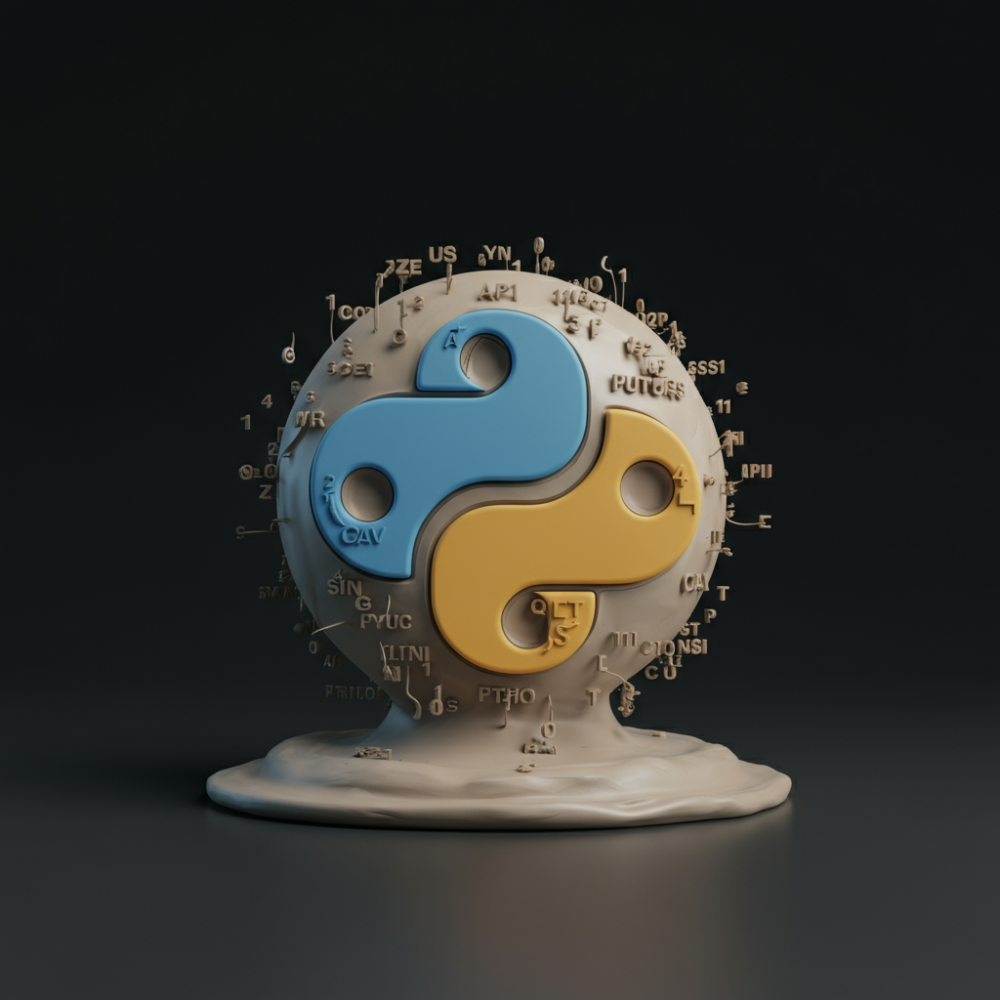

The future of Python And AI
Full Text:
As a Python developer deeply embedded in the world of technology, I've had a front-row seat to the incredible synergy between Python and Artificial Intelligence. It's no secret that Python has become the lingua franca of AI and Machine Learning, powering everything from data analysis and model training to deployment and research. But what does the *future* hold for this dynamic duo? Will Python maintain its dominance, or will new languages emerge to challenge its reign?
I firmly believe that Python's relationship with AI is not just strong, but set to become even more intertwined and transformative. Here's why:
**Python's Enduring Foundation in AI**
Python's current success in AI isn't accidental. It's built on several pillars:
1. **Rich Ecosystem of Libraries:** Libraries like NumPy, Pandas, Scikit-learn, TensorFlow, and PyTorch have become industry standards. They abstract away complex mathematical operations, making AI development accessible and efficient. This ecosystem is constantly evolving, with new tools and frameworks emerging regularly.
2. **Readability and Ease of Use:** Python's clear syntax and emphasis on readability make it ideal for rapid prototyping and collaborative development – crucial in fast-paced AI research.
3. **Vibrant Community:** A massive and active community contributes to open-source projects, provides support, and drives innovation, ensuring Python remains at the cutting edge.
4. **Versatility:** Python isn't just for AI; its general-purpose nature allows seamless integration with web development, data engineering, and other systems, making it a powerful glue language for end-to-end AI solutions.
**How AI Will Shape Python's Evolution**
The future isn't just about Python enabling AI; it's also about AI enabling Python to become even better.
1. **AI-Powered Development Tools:** Imagine your Python IDE evolving into a hyper-intelligent assistant. Tools like GitHub Copilot are just the beginning. Future AI will provide more sophisticated code generation, intelligent debugging suggestions, automatic refactoring, performance optimization insights, and even natural language-to-code translation, making Python development faster and less error-prone.
2. **Enhanced Performance and Optimization:** Python's perceived performance bottleneck (often due to the Global Interpreter Lock or GIL) is a constant topic of discussion. AI and ML techniques can lead to smarter compilers, runtime optimizers, and specialized hardware accelerators that understand Python code's intent and optimize its execution more effectively. Projects like Mojo, while a new language, demonstrate the demand for Python-like syntax with C-like performance, pushing Python itself to innovate in this area (e.g., JAX's compilation capabilities).
3.